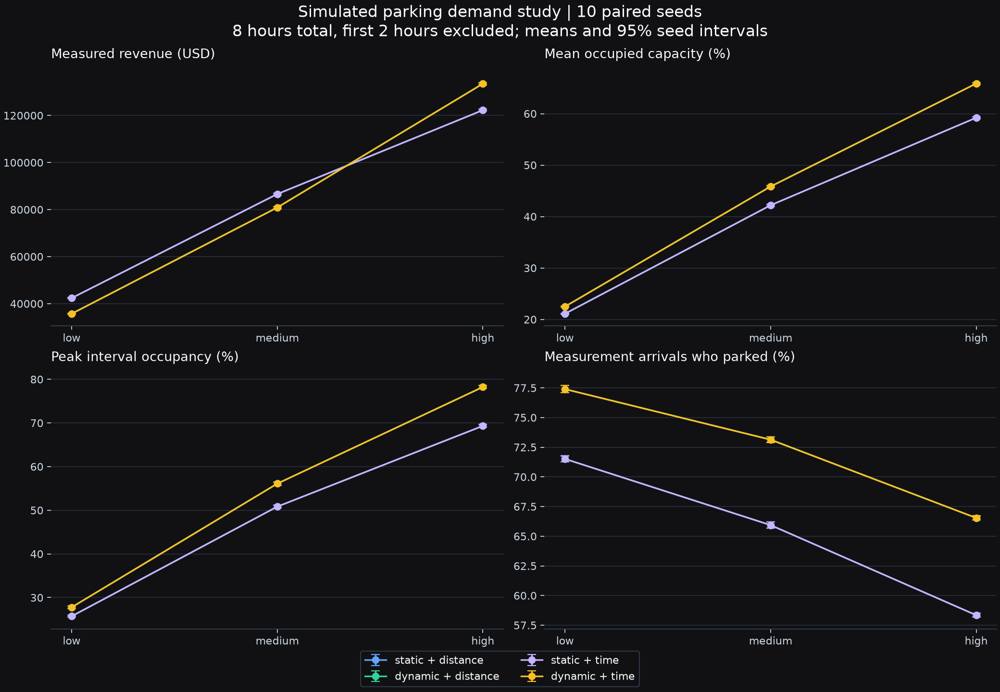
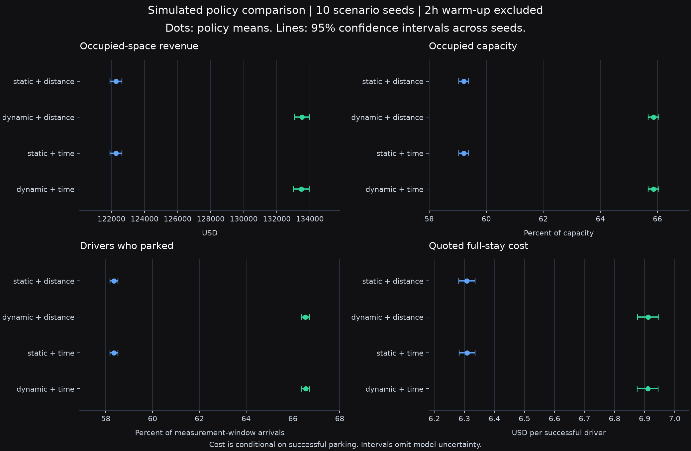

Test parking policy before choosing it.
A reproducible parking simulator for comparing prices, routing, driver access, and affordability under the same demand.
CIS 505 team project · University of Michigan–Dearborn
Evaluation
updated 12 November 2026 · Simulation only
Dynamic pricing helps under high demand, with trade-offs.
On ten fresh seeds at high demand, dynamic pricing increases modeled revenue by 9.2% and parking success by 8.2 percentage points versus static pricing with the same distance routing. Mean quoted stay cost rises from $6.31 to $6.91. Lower-demand scenarios improve access at a revenue cost.
The comparison below isolates pricing by holding distance routing constant. Revenue is measured over six hours; stay cost describes the full quoted stay of successful arrivals.
| Demand | Simulated revenue | Paired revenue effect (95% CI) | Parked arrivals | Quoted stay cost |
|---|---|---|---|---|
| Low | $42,386 → $35,722 (-15.7%) | $-6,804 to $-6,523 | 71.5% → 77.4% | $6.20 → $4.91 |
| Medium | $86,589 → $80,870 (-6.6%) | $-5,930 to $-5,508 | 65.9% → 73.1% | $6.28 → $5.66 |
| High | $122,263 → $133,526 (+9.2%) | $+10,982 to $+11,545 | 58.3% → 66.5% | $6.31 → $6.91 |


A controlled comparison, followed by fresh seeds.
The original five seeds (11–15) and ten fresh seeds (21–30) are reported separately. The algorithm was frozen before both sets were run with entry-rate billing. Static and dynamic prices are crossed with distance and traffic-weighted routing: 180 policy runs across three demand levels.
Every policy in a seed receives matching driver and zone inputs. Each run lasts eight hours; the first two hours are excluded. There are 113 modeled zones and 17,472 spaces. Low, medium, and high demand generate 15,389, 32,975, and 50,562 drivers per run. Offered load means arrival rate times expected stay divided by capacity, rather than an achieved occupancy target.
Prices are bounded at USD 1–10/hour with a 15% maximum movement per update. Each driver keeps the hourly rate accepted on entry. Revenue counts occupied minutes during measurement and stops at departure or simulation end. Driver outcomes use arrivals after warm-up and retain unresolved arrivals.
Effects use paired Student t intervals across identical seeds. They capture random-seed variability, omit model uncertainty, and are not adjusted for multiple comparisons. Full-stay costs are conditional means for successful drivers; the population can differ between policies.

Run a scenario locally.
The Python dashboard provides scenario controls, saved comparison charts, and report downloads. Synthetic scenarios work offline. Local map files add geographic context; all controlled studies use simulated traffic.
# After the pinned setup in the repository README
.venv/bin/parking-optimize --mode dashboard --port 8765
# Open http://127.0.0.1:8765
# A capacity-scaled study, with optional Apple GPU computation
.venv/bin/parking-optimize --mode study --data-source map \
--duration 8 --warmup 2 --seeds 21,22,23,24,25,26,27,28,29,30 \
--array-backend mlx --workers 4NumPy is the portable baseline. MLX computes batched walking distances on Apple silicon; graph searches and driver decisions remain on the CPU. No whole-system speedup or concurrent-user claim is implied.
Read setup and reproduction instructionsWhat this evidence can support.
The model shows a demand-dependent pricing effect and makes its trade-offs inspectable. Demand, behavior, destinations, and price preferences still need field calibration. Many capacities and rates are estimates or defaults, and original dataset provenance is incomplete. Exact geographic reproduction requires the same local input snapshot, which is not distributed with the report.
The road extract is small and disconnected: 58 nodes, 137 directed edges, and eight strongly connected components. Time-based routing shows little separation here. Five-minute decisions constrain search-delay measurements. The study establishes neither reduced congestion nor field forecast accuracy, latency guarantees, concurrent-user capacity, or municipal revenue gains.
The next useful work is observed arrival and stay data, a larger connected road network, calibrated price responses, and an explicit revenue, availability, and affordability objective before a monitored field comparison.
Built as a team project.
Jeremy Cleland, Saif Khan, and Asem Zahran.
CIS 505
Algorithms Analysis and Design, University of
Michigan–Dearborn, Summer 2025.